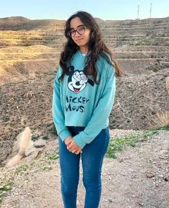

Fait Par : Neyrouz Khrouf
|

Prénom : Khrouf
Nom : Neyrouz
Adresse : Ghannouche Gabes Tunisie
Date de Naissance : 28/08/2004
Formations
|
- 2022 - 2023 Baccalauréat
- 2023 - présent Diplome en Anesthésie et Réanimation
Experience professionnelle
|
- 2023 Stage à l'hopital Rabta
- 2024 - présent Stage à Hopital Charles Nicoles
Compétences
|
- 2022 Delf B2 en Français
- 2024 - présent Compétences en Developpement Web
- 2024 - présent Compétences en Communication
Informations Supplémentaires
|
- 2024 - Présent Formation sur la plateform le wagon
- 2024 - Présent Formation en developpement sociale
|